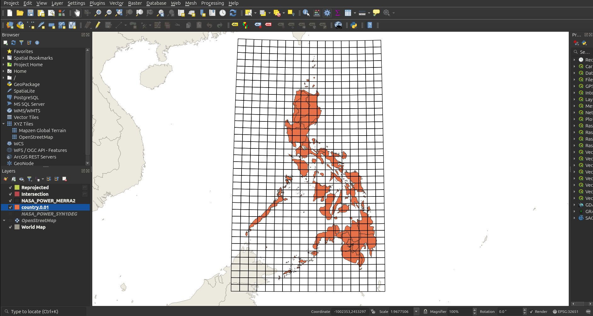

We present the first method capable of photorealistically reconstructing a non-rigidly deforming scene using photos/videos captured casually from mobile phones.
Our approach augments neural radiance fields (NeRF) by optimizing an additional continuous volumetric deformation field that warps each observed point into a canonical 5D NeRF. We observe that these NeRF-like deformation fields are prone to local minima, and propose a coarse-to-fine optimization method for coordinate-based models that allows for more robust optimization. By adapting principles from geometry processing and physical simulation to NeRF-like models, we propose an elastic regularization of the deformation field that further improves robustness.
We show that Nerfies can turn casually captured selfie photos/videos into deformable NeRF models that allow for photorealistic renderings of the subject from arbitrary viewpoints, which we dub "nerfies". We evaluate our method by collecting data using a rig with two mobile phones that take time-synchronized photos, yielding train/validation images of the same pose at different viewpoints. We show that our method faithfully reconstructs non-rigidly deforming scenes and reproduces unseen views with high fidelity.
We present the first method capable of photorealistically reconstructing a non-rigidly deforming scene using photos/videos captured casually from mobile phones.
Our approach augments neural radiance fields (NeRF) by optimizing an additional continuous volumetric deformation field that warps each observed point into a canonical 5D NeRF. We observe that these NeRF-like deformation fields are prone to local minima, and propose a coarse-to-fine optimization method for coordinate-based models that allows for more robust optimization. By adapting principles from geometry processing and physical simulation to NeRF-like models, we propose an elastic regularization of the deformation field that further improves robustness.
We show that Nerfies can turn casually captured selfie photos/videos into deformable NeRF models that allow for photorealistic renderings of the subject from arbitrary viewpoints, which we dub "nerfies". We evaluate our method by collecting data using a rig with two mobile phones that take time-synchronized photos, yielding train/validation images of the same pose at different viewpoints. We show that our method faithfully reconstructs non-rigidly deforming scenes and reproduces unseen views with high fidelity.
We present the first method capable of photorealistically reconstructing a non-rigidly deforming scene using photos/videos captured casually from mobile phones.
Our approach augments neural radiance fields (NeRF) by optimizing an additional continuous volumetric deformation field that warps each observed point into a canonical 5D NeRF. We observe that these NeRF-like deformation fields are prone to local minima, and propose a coarse-to-fine optimization method for coordinate-based models that allows for more robust optimization. By adapting principles from geometry processing and physical simulation to NeRF-like models, we propose an elastic regularization of the deformation field that further improves robustness.
We show that Nerfies can turn casually captured selfie photos/videos into deformable NeRF models that allow for photorealistic renderings of the subject from arbitrary viewpoints, which we dub "nerfies". We evaluate our method by collecting data using a rig with two mobile phones that take time-synchronized photos, yielding train/validation images of the same pose at different viewpoints. We show that our method faithfully reconstructs non-rigidly deforming scenes and reproduces unseen views with high fidelity.
flowchart TD A([Start]) --> B[/Gather Data/] B --> C[Process Data] C --> D[Run Clustering Methods] D --> E[K-means] D --> F[Hierarchical Clustering] D --> G[Gaussian Mixture Model] D --> H[DBSCAN] E --> I[Test different k values] F --> J[Test different dendrogram cuts] G --> K[Test different numbers of components] I --> M[Rank configurations by Silhouette Score and DBI, then sum the ranks] J --> M K --> M H --> L[Tune eps and min_samples] L --> N[Apply Maximum-Deviation Knee-Selection Heuristic] M --> O[Select promising configurations] N --> O O --> P[/Export selected results/] P --> Q[Evaluate selected clustering methods] Q --> R[Calculate Silhouette Score and DBI] R --> S[Compare and Analyze Results] S --> U([End])
The Philippine Archipelago is divided into its 18 administrative regions, which are then clustered based on the similarities of their climate. Climate is measured through four parameters: All Sky Surface Shortwave Downward Irradiance, Temperature at 2 Meters, Precipitation Average, and Wind Speed at 10 Meters. The 18 regions include the Negros Island Region, which was recently added to the archipelago [1].
The data was collected from NASA POWER LaRC through the RESTful APIs that it provides. The quality of the collected data is limited by the resolution of the two grids on which the four chosen parameters lie. The first is the MERRA-2 grid, used for three of the four parameters, which are meteorological data sets with the code names T2M, PRECTOTCORR, and WS10M. This grid has a resolution of ½° latitude and ⅝° longitude [2]. The second is the SYN1deg grid, used for the radiation data set; in this paper, the only irradiance parameter is ALLSKY_SFC_SW_DWN. This grid has a resolution of 1° latitude and 1° longitude [2].
The set of grid cells collected for a region consists of the cells that contain a piece of land belonging to that region. However, because of the resolution of these grids and the maritime nature of the Philippines, the API may return cells containing substantial water areas, which could introduce inconsistencies in the data [3]. To resolve this, area-weighted spatial aggregation is applied [4]. The climate data from each selected grid cell is multiplied by its land-area weight and accumulated, then divided by the total weight for that region. This normalization also absorbs small floating-point differences, so that the total weight does not need to be exactly one.
Since there are thousands of undocumented islands in the archipelago, this paper only includes the islands documented in Faeldon's Philippines JSON maps GitHub repository, together with the region borders as of November 2026 [5]. Once the grid cells and their weighted data have been computed, they are compiled into a single CSV file for each region. In total, 18 CSV files (one per region) are generated by utilities/data_retriever.py and saved in gathered_data/regions.

After gathering the data, utilities/data_reader.py reads the regional CSV files from gathered_data/regions. The read_monthly_data() function computes the monthly datasets, while prepare_monthly_data() saves the shared processed files used by the clustering methods. The annual column (ANN) remains in the original records but is excluded from these monthly datasets.
The raw data is a dictionary whose keys are the region names and whose values are arrays of yearly parameter records. Each record contains "PARAMETER," "YEAR," "GRID_LAYER," the twelve monthly columns, and "ANN."
For each of the 12 months, the values of the four parameters (precipitation, temperature, wind, and solar) for each of the 18 regions from 2001 to 2025 are averaged by regional_average() and stored in a dictionary. This function returns an alphabetically sorted array of region names, an array of their monthly averages, and the headers following the format "GRID_PARAMETER_MONTH."
The monthly averages are then passed to standardize_data() to place the four parameters on comparable scales. For each parameter column, the function calculates the mean and standard deviation across the 18 regions. Each value is standardized by subtracting the column's mean and dividing by its standard deviation:
standardized value = (value − column mean) / column standard deviation
This prevents a parameter from dominating the distance calculations simply because its numerical values are larger [4,5]. If all regions have the same value for a column, its standardized values are set to zero to avoid division by zero. The original monthly averages are preserved separately.
Finally, read_monthly_data() returns four items: regions, monthly_values, monthly_headers, and monthly_averages. regions contains the alphabetically sorted region names, while the other three are dictionaries with keys from "JAN" to "DEC". Each monthly dataset contains 18 rows representing the regions and four columns representing precipitation, temperature, wind, and solar values. monthly_values contains the values standardized across regions for clustering, monthly_headers contains their corresponding column names ("GRID_PARAMETER_MONTH"), and monthly_averages keeps the averages in their original units.
This section describes the four clustering methods used to group the 18 Philippine regions according to their monthly climate profiles: K-Means, Agglomerative Hierarchical Clustering, Gaussian Mixture Model (GMM), and DBSCAN. Each method uses four climate variables: precipitation, temperature, wind speed, and solar irradiance. Clustering is performed independently for each month from January to December. The following subsections explain the implementation and configuration of each method.
K-means groups the 18 regions into k clusters and aims to minimize the sum of squared Euclidean distances between each region and the centroid of its assigned cluster [6]. Clustering is performed separately for each month, from January to December. In each run, every region is represented by four climate variables: precipitation, temperature, wind speed, and solar irradiance. These values are averaged over the period from 2001 to 2025 using read_monthly_data().
Since the four variables have different units and numerical ranges, each feature is standardized using z-scores across the regions before clustering. This ensures that no single parameter disproportionately influences the distance calculations [4,7]. The standardized value is computed as:
\[ z_{ij} = \frac{x_{ij} - \mu_j}{\sigma_j} \tag{1} \]where \(x_{ij}\) is the original value of feature \(j\) for region \(i\), \(\mu_j\) is the mean of feature \(j\) across all regions, and \(\sigma_j\) is its standard deviation.
The algorithm implemented in kmeans_clustering.py begins by randomly selecting \(k\) distinct regions as the initial centroids. Each region is then assigned to its nearest centroid based on Euclidean distance. The distance between a region and a centroid is calculated as:
where \(\mathbf{x}_i\) represents the four-dimensional feature vector of region \(i\), and \(\textbf{\mu}_j\) represents the centroid of cluster \(j\).
After calculating the distances, each region is assigned to the cluster whose centroid is closest to it. The centroid of each cluster is then updated by computing the mean of all feature vectors assigned to that cluster:
\[ C_i = \operatorname*{arg\,min}_{j \in \{1,\ldots,k\}} d(\mathbf{x}_i,\textbf{\mu}_j) \tag{3} \] \[ \textbf{\mu}_j = \frac{1}{|C_j|} \sum_{\mathbf{x}_i \in C_j} \mathbf{x}_i \tag{4} \]where \(C_i\) denotes the cluster assignment of region \(i\), and \(C_j\) represents the set of regions assigned to cluster \(j\). The assignment and centroid update steps are repeated until the centroids no longer change [6].
The same value of \(k\) is used for all twelve monthly clustering runs. This value is selected by executing K-means over a range of candidate \(k\) values and ranking each candidate by its Silhouette Score and Davies-Bouldin Index. The two rankings are then summed, and the \(k\) with the lowest combined rank is selected [15,20] (see Evaluation Metrics and the Metric Evaluation Plan).
The final clustering results depend heavily on the initial centroid positions, as an unfavorable initialization may lead the algorithm to a local minimum [6]. To ensure that all group members obtain identical results, the random number generator is initialized with a fixed seed of \(170\) before clustering. This causes the generator to produce the same sequence of random values across runs, allowing members using the same environment to select the same initial regions and obtain reproducible clusters [8].
However, seeding only improves reproducibility and does not guarantee better clustering results. Since only one run is performed per month, each result reflects a single set of initial centroids, which may not produce the best possible grouping [6]. Furthermore, random sequences may differ across Python versions [8], so all group members should use the same Python version to maintain consistency.
Since the four climate variables cannot be directly represented in a traditional two-dimensional scatter plot, the clustering results for each month are visualized using two separate scatter plots. The first plot presents precipitation against temperature, while the second presents wind speed against solar irradiance.
The points in both plots are colored according to the cluster assignments obtained from the full four-dimensional clustering process. Thus, each plot provides a two-dimensional view of the same clustering result, displaying only two of the four climate variables. The two plots should therefore be interpreted together when examining the monthly clustering results.
The Python file hierarchical_clustering.py implements agglomerative hierarchical clustering, which begins by treating each observation as an individual cluster and repeatedly merges the closest clusters to construct a hierarchy [9]. The resulting hierarchy is represented through a tree diagram called a dendrogram [10].
The program starts with main(), which calls read_monthly_data() to obtain the preprocessed datasets. It then prompts the user to specify the number of clusters (\(k\)) and the linkage method to be used across all twelve monthly datasets.
The euclidean_distance() function measures the climate difference between two regions using their four climate variables: precipitation, temperature, wind speed, and solar irradiance. The Euclidean distance between two regions is calculated as:
where \(a\) and \(b\) represent the four-dimensional climate feature vectors of two regions, and \(a_i\) and \(b_i\) represent their respective values for feature \(i\).
Average linkage is selected to calculate the distance between clusters because it considers all pairwise distances between observations belonging to two clusters, providing an overall measure of their climate differences. The average linkage distance between clusters \(A\) and \(B\) is calculated as:
\[ D(A,B) = \frac{1}{|A||B|} \sum_{a \in A} \sum_{b \in B} d(a,b) \tag{6} \]where \(A\) and \(B\) represent two clusters, \(|A|\) and \(|B|\) denote the number of observations in each cluster, and \(d(a,b)\) is the Euclidean distance between observations \(a\) and \(b\).
Lund and Li describe average linkage as a compromise between single and complete linkage in climatic regionalization [11]. Additionally, Fiddes et al. compared different clustering methods and preferred average linkage in their study [12]. These studies support the selection of average linkage for this project.
The hierarchical_clustering() function repeatedly identifies and merges the two clusters with the smallest average linkage distance. At each iteration, the program records the IDs of the merged clusters, the distance at which they were joined, and the number of regions in the resulting cluster.
Initially, each of the 18 regions forms its own cluster. During each iteration, the number of clusters decreases by one as the closest pair is merged. When the number of remaining clusters reaches the user-specified value of \(k\), the program saves the corresponding cluster assignments. However, it continues merging the remaining clusters to construct the complete hierarchy. The function returns both the selected cluster assignments and the complete merge history.
The draw_dendrogram() function uses the recorded merge history to generate a dendrogram for each month, producing twelve diagrams in total. Each dendrogram displays the 18 region names along the horizontal axis, while the vertical axis represents the average linkage distance at which clusters were merged [13].
Cluster labels are also displayed alongside the region names. For example, a label such as CAR (C1) indicates that the Cordillera Administrative Region belongs to Cluster 1. Changing the value of \(k\) affects the cluster assignments and corresponding labels, but does not change the underlying dendrogram for the same dataset and linkage method.
Finally, the write_output() function saves the resulting cluster assignments, original monthly averages, standardized values, merge history, and cluster summary. These outputs provide the data needed to examine the clustering results and interpret the hierarchical relationships among the regions.
The Gaussian Mixture Model (GMM) is an unsupervised learning algorithm that represents the data as a mixture of multiple Gaussian distributions. The implementation follows an iterative process consisting of parameter initialization, the Expectation step, the Maximization step, and a convergence test.
Given a dataset containing \(N\) observations, define the number of Gaussian components \(K\) and the convergence tolerance \(\epsilon\). Each component is characterized by its mean vector, covariance matrix, and mixing weight.
Initialize the parameters of the Gaussian components before performing the iterative optimization process. The initial means are selected by randomly sampling \(K\) distinct observations from the dataset without replacement. Each component is assigned an equal mixing weight:
\[ \pi_k = \frac{1}{K} \tag{7} \]
The initial covariance matrices are set using the global population covariance matrix of the dataset. This provides a common estimate of the overall data dispersion for all Gaussian components.
Alternatively, K-means clustering can be used to initialize the component means using its cluster centroids. However, random initialization was selected to maintain the independence of GMM from the K-means implementation during the algorithm comparison.
Calculate the responsibility of each Gaussian component for every observation. The responsibility represents the posterior probability that observation \(x_i\) belongs to component \(k\), given the current parameter estimates.
\[ \gamma_{ik} = \frac{ \pi_k \mathcal{N}(x_i \mid \mu_k, \Sigma_k) }{ \sum_{j=1}^{K} \pi_j \mathcal{N}(x_i \mid \mu_j, \Sigma_j) } \tag{8} \]
where \(\gamma_{ik}\) is the responsibility of component \(k\) for observation \(x_i\), \(\pi_k\) is its mixing weight, \(\mu_k\) is its mean vector, and \(\Sigma_k\) is its covariance matrix.
Update the parameters of each Gaussian component using the responsibilities calculated during the E-step. First, calculate the effective number of observations assigned to each component:
\[ N_k = \sum_{i=1}^{N} \gamma_{ik} \tag{9} \]
The mean vector of each component is updated using the weighted average of the observations:
\[ \mu_k = \frac{1}{N_k} \sum_{i=1}^{N} \gamma_{ik}x_i \tag{10} \]
The covariance matrix is updated using the weighted deviations of the observations from the updated mean:
\[ \Sigma_k = \frac{1}{N_k} \sum_{i=1}^{N} \gamma_{ik} (x_i-\mu_k)(x_i-\mu_k)^T \tag{11} \]
Finally, update the mixing weight of each component based on its effective number of observations:
\[ \pi_k = \frac{N_k}{N} \tag{12} \]
Evaluate the log-likelihood of the dataset using the updated parameters:
\[ \mathcal{L} = \sum_{i=1}^{N} \log\left( \sum_{k=1}^{K} \pi_k \mathcal{N}(x_i \mid \mu_k, \Sigma_k) \right) \tag{13} \]
Compare the current log-likelihood with the value from the previous iteration. If the absolute difference is less than the specified convergence tolerance, the algorithm terminates. Otherwise, repeat the E-step and M-step until convergence is achieved.
Once the algorithm converges, assign each observation to the Gaussian component with the highest responsibility:
\[ C_i = \arg\max_{k \in \{1,\ldots,K\}} \gamma_{ik} \tag{14} \]
The resulting cluster assignments are then written to the output file using the write_output() function.
The Density-Based Spatial Clustering of Applications with Noise (DBSCAN) algorithm was implemented to group Philippine regions according to the similarity of their monthly climate profiles. Each region was represented as a multidimensional data point, with its coordinates corresponding to the values of four climate parameters: 2-meter temperature (T2M), corrected precipitation (PRECTOTCORR), wind speed at 10 meters (WS10M), and downward shortwave solar radiation at the surface (ALLSKY_SFC_SW_DWN).
The implementation processes each month independently. For a given month, the corresponding climate values of each region are retrieved and represented as a point in a four-dimensional feature space. Each point is assigned the following attributes: its corresponding region, climate coordinates, core-point status, list of neighboring points, and cluster assignment. Initially, all points are assigned a cluster identifier of -1, indicating that they have not yet been assigned to a cluster.
Euclidean distance is used to measure the similarity between two points in the feature space. Given two points \(p\) and \(q\), each containing \(d\) climate attributes, their Euclidean distance is calculated as:
\[ d(p,q) = \sqrt{ \sum_{i=1}^{d}(p_i-q_i)^2 } \tag{15} \]
where \(p_i\) and \(q_i\) represent the values of the \(i\)-th climate parameter of points \(p\) and \(q\), respectively. A smaller distance indicates greater similarity between the climate profiles of two regions.
DBSCAN requires two parameters: the neighborhood radius \(\varepsilon\) (epsilon) and the minimum number of points required to form a dense region, \(\text{MinPts}\). The epsilon parameter determines the maximum distance between two points for them to be considered neighbors, while \(\text{MinPts}\) determines the minimum neighborhood population required for a point to be classified as a core point.
In this implementation, \(\text{MinPts}\) was set to 5 based on the dimensionality of the dataset. A general guideline for selecting \(\text{MinPts}\) is to use a value greater than or equal to the number of dimensions plus one, expressed as:
\[ \text{MinPts} \geq D+1 \tag{16} \]
Since each observation in this study is represented by four climate parameters, the minimum value is therefore 5. The selected \(\text{MinPts}\) value is applied consistently across all monthly datasets. However, the epsilon parameter is determined separately for each month using its corresponding \(k\)-distance distribution. This allows the neighborhood radius to reflect the distribution of climate profiles within each monthly dataset rather than applying a single fixed epsilon value throughout the year.
Since the implementation excludes the point itself from its stored neighbor list, the core-point condition is expressed as:
\[ |N_{\varepsilon}(p)|+1 \geq \text{MinPts} \tag{17} \]
where \(N_{\varepsilon}(p)\) denotes the set of neighboring points of \(p\) within the specified epsilon radius. Consequently, a point must have at least four other neighboring points to satisfy the \(\text{MinPts}\) requirement.
The selection of epsilon is an important consideration in DBSCAN because inappropriate parameter values can affect the resulting cluster structure and the number of observations classified as noise. A \(k\)-distance graph provides a means of examining the distribution of distances between observations and their \(k\)-th nearest neighbors. Yin et al. [4] discuss the use of \(k\)-distance curves for determining DBSCAN parameters and identifying suitable epsilon values.
In this implementation, the \(k\)-distance of each point is calculated using its distance to the fourth-nearest neighboring point. This corresponds to \(k=4\), since \(\text{MinPts}\) is set to 5 and the point itself is excluded from the distance calculations. The distances are calculated using (15) and sorted in ascending order for each point. The resulting \(k\)-distance values are then sorted across all points to generate the \(k\)-distance graph.
Let \(d_k(p)\) denote the distance from point \(p\) to its \(k\)-th nearest neighbor. The sorted \(k\)-distance sequence is represented as:
\[ K = \operatorname{sort} \left( d_k(p_1), d_k(p_2), \ldots, d_k(p_n) \right) \tag{18} \]
where \(n\) is the number of data points and \(k=4\). The horizontal axis of the resulting graph represents the position of each point in the sorted sequence, while the vertical axis represents its corresponding \(k\)-distance.
To estimate epsilon, the implementation applies a maximum-deviation heuristic to the normalized \(k\)-distance graph. First, the horizontal and vertical coordinates are independently normalized to the interval \([0,1]\) using min-max normalization:
\[ x_i' = \frac{x_i-x_{\min}}{x_{\max}-x_{\min}} \tag{19} \]
\[ y_i' = \frac{y_i-y_{\min}}{y_{\max}-y_{\min}} \tag{20} \]
where \(x_i\) and \(y_i\) represent the original coordinates of the \(k\)-distance graph, and \(x_i'\) and \(y_i'\) represent their normalized values.
The deviation at each position is then calculated as:
\[ D_i = x_i'-y_i' \tag{21} \]
The index corresponding to the maximum deviation is selected as the estimated knee position:
\[ i^* = \operatorname*{arg\,max}_{i} D_i \tag{22} \]
Finally, the epsilon value is obtained from the original, unnormalized \(k\)-distance sequence at the selected index:
\[ \varepsilon = K_{i^*} \tag{23} \]
This procedure is inspired by the general concept of knee detection, in which a significant change in a curve is used to identify an appropriate operating point. Satopää et al. [5] introduced the Kneedle algorithm, which detects knee points through normalization, transformation of the curve, and the identification of local maxima subject to threshold conditions. However, the present implementation uses a simplified maximum-deviation approach. It does not implement the complete Kneedle procedure, particularly its local-maximum detection and sensitivity-based thresholding. Therefore, the method is treated as a maximum-deviation knee-selection heuristic rather than a direct implementation of Kneedle.
After determining epsilon, the implementation identifies the neighborhood of each point by calculating its Euclidean distance from every other point in the dataset. A point \(q\) is considered a neighbor of point \(p\) when the distance between them is less than or equal to epsilon:
\[ N_{\varepsilon}(p) = \left\{ q \mid q \neq p,\ d(p,q)\leq\varepsilon \right\} \tag{24} \]
The condition \(q \neq p\) ensures that a point is not included in its own stored neighbor list. Each identified neighbor is stored in the corresponding point object for subsequent core-point identification and cluster expansion.
The implementation performs an exhaustive pairwise comparison between points. Thus, every point is compared with all other points in the monthly dataset to determine its epsilon-neighborhood.
Once the neighborhoods have been established, each point is evaluated according to the \(\text{MinPts}\) requirement. A point is classified as a core point if its epsilon-neighborhood, including itself, contains at least five points. This is determined using (17).
Points that do not satisfy the \(\text{MinPts}\) requirement are not immediately classified as noise. They may still become members of a cluster if they are located within the neighborhood of a core point. Such points are classified as border points. A point that is neither assigned to a cluster nor reachable from any core point is ultimately classified as noise.
The implementation records the core-point status of each point to distinguish between points that can expand a cluster and those that can only be assigned to an existing cluster.
After identifying the core points, the implementation constructs clusters through a queue-based expansion procedure. Each unassigned core point is considered as a starting point for a new cluster. A new cluster identifier is generated, and the starting point is assigned to that cluster.
The algorithm then places the starting point's neighbors into a queue for exploration. Each retrieved neighbor is checked to determine whether it has already been visited. If it has not been visited, it is marked as visited and assigned to the current cluster if it remains unassigned.
The expansion process depends on the classification of the retrieved point. If the point is a core point, its neighbors are added to the queue for further exploration. This allows the cluster to expand through points that satisfy the density requirement. Conversely, if the retrieved point is a border point, it is assigned to the current cluster but does not contribute additional neighbors to the expansion process.
This procedure continues until the queue becomes empty, indicating that no additional density-reachable points can be added to the current cluster. The implementation then proceeds to the next unassigned core point and repeats the process until all core points have been examined.
After all clusters have been formed, points that remain unassigned are classified as noise. Cluster identifiers are initially assigned starting from zero during processing. For the exported results and visualizations, cluster identifiers are incremented by one so that the clusters are numbered starting from 1, while noise points retain the identifier -1.
The clustering results are evaluated using two internal validation metrics: the Silhouette Score and the Davies-Bouldin Index. These metrics assess clustering quality by examining cluster cohesion and separation without requiring ground-truth labels. The following subsections describe their principles, uses, and limitations.
The silhouette score is an internal clustering validation metric that quantifies how well each data point fits its assigned cluster by contrasting within-cluster cohesion against nearest-cluster separation [14]. It ranges from −1 to +1, where values near +1 indicate compact, well-separated clusters, values near 0 suggest borderline assignment, and negative values flag potential misclassification [15,17].
The most widespread use of the silhouette score is selecting the optimal number of clusters (k) in algorithms like K-means, where the highest average silhouette width across candidate k values indicates the best partition [15]. This approach has been applied to customer segmentation [16] and job vacancy corpora [17] to identify the k value yielding the most coherent cluster structure.
Beyond selecting k, the silhouette score serves as a comparative metric to evaluate different clustering algorithms, distance metrics, and preprocessing choices without requiring ground-truth labels [20].
Several studies identify conditions under which the silhouette score produces misleading results. The metric assumes roughly isotropic clusters of comparable scale; when cluster diameters differ substantially, silhouette values can be unreliable [17]. In network clustering, the score accurately identifies the true community count only when clusters are well separated and balanced, tending to underestimate under strong imbalance or weak separation and to overestimate in sparse networks [18]. The standard micro-averaged silhouette is sensitive to cluster imbalance, whereas the often-overlooked macro-averaged variant is more robust [19].
The Davies-Bouldin Index (DBI) is an internal cluster validity measure that evaluates clustering performance by quantifying the ratio of intra-cluster cohesion to inter-cluster separation, where lower values indicate better-defined clusters [20]. It computes the average similarity between each cluster and its most similar counterpart, using cluster centroids and within-cluster dispersion to capture both compactness and separation in a single metric [20].
The most common use of DBI is selecting the optimal number of clusters (k) in partitioning algorithms like K-means, where the k value yielding the lowest DBI is considered best [20]. Researchers iterate over candidate k values and choose the partition that minimizes DBI, as a smaller value signals tighter clusters with greater separation between them [7,8].
DBI serves as a benchmark to compare clustering algorithms, distance metrics, and initialization strategies without requiring ground-truth labels [9]. DBI is routinely used to compare different clustering algorithms on the same dataset, because it summarizes within-cluster compactness and between-cluster separation into one minimization criterion [7]. More recent methodological work still describes internal indices such as DBI as standard tools for comparing the goodness of results from different clustering methods [10].
DBI's reliability depends on cluster geometry and data distribution. The metric works well for convex-shaped, well-separated clusters but can be misleading for concave, nested, or density-based cluster shapes [24]. It is sensitive to cluster imbalance, non-compact clusters, and high-dimensional data, which can distort the compactness-to-separation ratio [9]. Treating DBI as an objective function for identifying good partitions can promote clusterings that match expert knowledge poorly, suggesting it is better suited for selecting cluster count (k) than for defining optimal partitions [25].
This section maps how the Silhouette Score and the Davies-Bouldin Index are utilized throughout the project: first to select hyperparameters, and then to compare the four algorithms.
Multi-criteria decision-making (MCDM) provides a framework for evaluating alternatives using multiple criteria, particularly when individual criteria produce conflicting assessments. Cebesoy et al. discuss the challenges of making decisions when no alternative performs best across all evaluation criteria, highlighting the need for systematic approaches to combine different assessments [26]. One approach to addressing this problem is rank aggregation, which combines multiple rankings into a single overall ranking. Viappiani discusses scoring-based rank aggregation methods, including the Borda Count, in which alternatives receive scores based on their positions in individual rankings [27]. The Borda Count is mathematically equivalent to selecting the alternative with the lowest sum of ranks when all rankings contain the same alternatives.
Applying this approach to clustering evaluation allows configurations to be ranked independently according to the Silhouette Score and the Davies-Bouldin Index, with their respective ranks combined to determine an overall ranking. This provides a straightforward way to consider both evaluation metrics without directly comparing their different numerical scales.
For this project, the combined rank is defined as:
\[ R_{\text{total}}(i) = R_{\text{silhouette}}(i) + R_{\text{DBI}}(i) \tag{25} \]
where:
The configuration with the lowest combined rank is preferred.
The combined ranking approach is applied to K-means, Hierarchical Clustering, and Gaussian Mixture Models to determine the most suitable hyperparameter configuration for each algorithm. These algorithms produce cluster assignments for all observations, allowing their configurations to be evaluated on the same set of observations through the Silhouette Score and Davies-Bouldin Index. Since these metrics have different numerical scales and optimization directions, converting their results into rankings allows them to be combined without directly comparing their raw values. The sum-of-ranks approach also provides a simple way to balance the two evaluation criteria without introducing additional weighting parameters.
DBSCAN is evaluated separately because its ability to classify observations as noise can result in different configurations being evaluated on different subsets of the dataset. Its evaluation therefore considers both clustering quality and the proportion of observations classified as noise.
Table 1 is an illustrative example of the ranking methodology.
| k | Silhouette | Silhouette rank | DBI | DBI rank | Combined rank |
|---|---|---|---|---|---|
| 2 | 0.98 | 1 | 0.8 | 3 | 4 |
| 3 | 0.5 | 2 | 0.2 | 1 | 3 |
| 4 | 0.4 | 3 | 0.5 | 2 | 5 |
| … | … | … | … | … | … |
| 17 | … | … | … | … | … |
Based on the table, \(k=3\) has the lowest combined rank and is therefore selected as the cluster count.
The performance of the four clustering algorithms, namely K-means, Hierarchical Clustering, Gaussian Mixture Models (GMM), and DBSCAN, is evaluated using the Silhouette Score and the Davies-Bouldin Index (DBI). These metrics provide an assessment of clustering quality by measuring the cohesion of observations within their assigned clusters and the separation between different clusters. The Silhouette Score evaluates how closely an observation is grouped with observations in its own cluster compared to those in other clusters, where values closer to 1 indicate well-separated clusters, values around 0 suggest overlapping clusters, and negative values may indicate potential misclassification. In contrast, the Davies-Bouldin Index measures the average similarity between each cluster and its most similar neighboring cluster, with lower values indicating more compact and better-separated clusters.
The results from both metrics are considered when comparing the performance of the four algorithms, with higher Silhouette Scores and lower DBI values indicating more favorable clustering results. Any differences or disagreements between the two metrics are also examined to provide a more balanced interpretation of algorithm performance. Through this evaluation, the study aims to identify which algorithm produces better-defined groupings within the Philippine climate dataset based on the selected internal validation metrics.
Results and discussion will be added here.
We present the first method capable of photorealistically reconstructing a non-rigidly deforming scene using photos/videos captured casually from mobile phones.
Our approach augments neural radiance fields (NeRF) by optimizing an additional continuous volumetric deformation field that warps each observed point into a canonical 5D NeRF. We observe that these NeRF-like deformation fields are prone to local minima, and propose a coarse-to-fine optimization method for coordinate-based models that allows for more robust optimization. By adapting principles from geometry processing and physical simulation to NeRF-like models, we propose an elastic regularization of the deformation field that further improves robustness.
We show that Nerfies can turn casually captured selfie photos/videos into deformable NeRF models that allow for photorealistic renderings of the subject from arbitrary viewpoints, which we dub "nerfies". We evaluate our method by collecting data using a rig with two mobile phones that take time-synchronized photos, yielding train/validation images of the same pose at different viewpoints. We show that our method faithfully reconstructs non-rigidly deforming scenes and reproduces unseen views with high fidelity.
There's a lot of excellent work that was introduced around the same time as ours.
Progressive Encoding for Neural Optimization introduces an idea similar to our windowed position encoding for coarse-to-fine optimization.
D-NeRF and NR-NeRF both use deformation fields to model non-rigid scenes.
Some works model videos with a NeRF by directly modulating the density, such as Video-NeRF, NSFF, and DyNeRF
There are probably many more by the time you are reading this. Check out Frank Dellart's survey on recent NeRF papers, and Yen-Chen Lin's curated list of NeRF papers.
@article{park2021nerfies,
author = {Park, Keunhong and Sinha, Utkarsh and Barron, Jonathan T. and Bouaziz, Sofien and Goldman, Dan B and Seitz, Steven M. and Martin-Brualla, Ricardo},
title = {Nerfies: Deformable Neural Radiance Fields},
journal = {ICCV},
year = {2021},
}